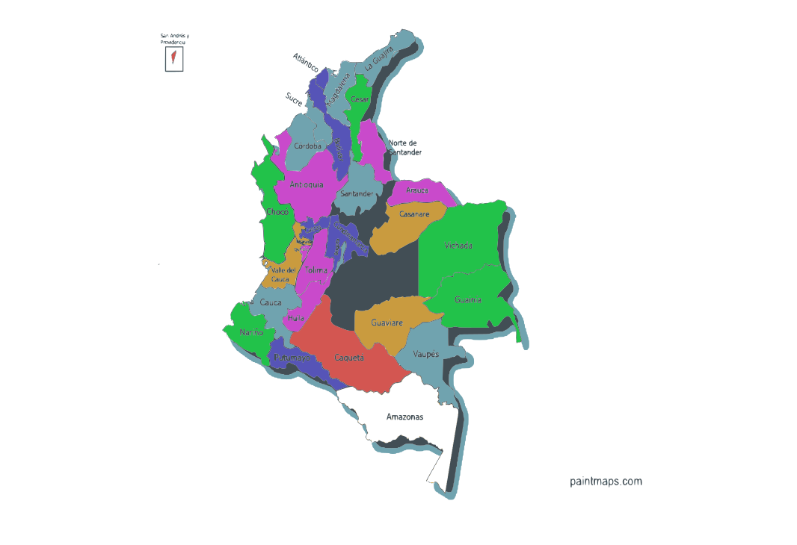

VOLTAR PARA HOME
Mapa da Colômbia

Caquetá
CLIMA
Equatorial úmido (tropical chuvoso).
POPULAÇÃO
~410.000 habitantes.
ALTITUDE
Predominantemente baixa (100 a 400m), com elevações na cordilheira.
VEGETAÇÃO
Floresta Amazônica (Selva).
Fechar
Guaviare
CLIMA
Tropical de savana e equatorial.
POPULAÇÃO
~90.000 habitantes.
ALTITUDE
Entre 150 e 250 metros.
VEGETAÇÃO
Transição entre a Floresta Amazônica e as Savanas (Llanos).
Fechar
Vaupés
CLIMA
Equatorial chuvoso (alta umidade).
POPULAÇÃO
~45.000 habitantes.
ALTITUDE
Aproximadamente 100 a 200 metros.
VEGETAÇÃO
Floresta Amazônica densa.
Fechar
Guainía
CLIMA
Equatorial e tropical de transição.
POPULAÇÃO
~50.000 habitantes.
ALTITUDE
Aproximadamente 100 metros.
VEGETAÇÃO
Floresta Amazônica, áreas de savana e transição biológica.
Fechar